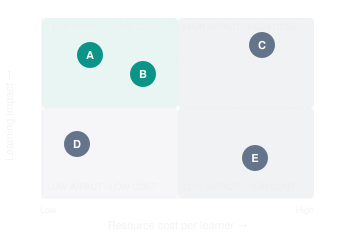
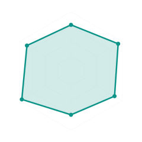

LEARNING VELOCITY
Designing the measurement, visualization, attribution, and reward architecture for SOVRAEGIS
I recommend developing LEARNING VELOCITY as a comprehensive framework, supported by a measurement model, interoperability standards, evaluation methodologies, and an operational intelligence system.
The most important innovation would be extending Learning Velocity beyond measuring the Sovereign Learner's progress to determining the measurable contribution of each learning vector — including the SYNCZ, SYNCZINES, SYNCTESS designers, SOVRAEGES, and SOVRAEGENTS responsible for creating and supporting the learning experience.
That could become the basis for a transparent, evidence-driven contributor economy.
1. What should we call it?
The terms framework, model, protocol, methodology, and system are not mutually exclusive. They describe different architectural layers.
Term | Role within Learning Velocity |
|---|---|
Framework | The overarching conceptual architecture, principles, and governance |
Model | Mathematical representation of learning and intervention effects |
Methodology | How evidence is collected, evaluated, and interpreted |
Standard | Agreed definitions, metrics, units, schemas, and quality requirements |
Protocol | How systems exchange observations, evidence, and results |
System | The operational software implementing the framework |
Index | A standardized composite score for a specific purpose |
Observatory | The dashboards, analytics, and interpretation environment |
Proposed naming architecture
SLVF
SOVRAEG Learning Velocity Framework
The overarching scientific, pedagogical, and governance frameworkSLVM
Measurement Model
Quantifies durable learning progressionSLVS
Measurement Standards
Defines comparable metrics and evidence rulesSLVP
Evidence Protocol
Exchanges intervention, assessment, and attribution recordsSLVE
Evaluation Methodology
Tests effectiveness and causal contributionSLVO
Learning Velocity Observatory
Visualizes insights and effectivenessSLVR
Reward and Recognition Model
Allocates value to qualifying contributorsThese would initially be proposed SOVRAEG specifications, not existing accredited international standards.
I would use SLVF as the umbrella term and Learning Vector Effectiveness (LVE) as the core analytical construct for measuring how much each factor contributes.
This gives you two separate, complementary measurements:
Learning Velocity (LV): How effectively and rapidly does capability develop?
Learning Vector Effectiveness (LVE): How much does a particular intervention contribute to that development?
A learner could experience strong LV through a combination of SYNCZ activities, human coaching, AI tutoring, and independent practice. LVE seeks to identify the contribution of those components rather than assuming they were equally influential.
2. A mathematical model for vector effectiveness
I suggest distinguishing three classes of measurement.
Layer A — Observed Learning Velocity
At a particular competency and delayed assessment interval:
Where is delayed demonstrated proficiency, is baseline proficiency, and is active learning time.
This is a measure of observed learner progress, not evidence of which factor caused it.
Layer B — Causal Learning Vector Effectiveness
For vector , define:
Here:
is durable proficiency gain at a specified assessment delay.
means that the vector is provided, rather than replaced by an appropriate comparison condition.
represents a conceptual causal intervention, not merely observing whether a learner happened to use the vector.
is a common reference effort budget, if the outcome is evaluated at fixed effort.
This estimates the vector's contribution to durable gain per reference learning hour, in a defined learner population and context.
For studies comparing ordinary learning programs with different actual durations, it may be preferable to report causal effects on durable gain, mastery probability, and total time separately. Ratios alone can obscure important differences.
Importantly, the effect of a vector is not a universal property of that vector. A mentor, video, or AI agent could be extremely effective for one competency or learner population and relatively ineffective for another.
Layer C — Vector interactions and synergy
Suppose a learner receives an interactive SYNCZ and human coaching.
The combined benefit might differ from the sum of their individual benefits.
For two vectors, A and B, define the interaction:
All four terms are comparable expected outcomes under the four intervention configurations.
Positive : Synergistic effect.
Zero : Additive effect.
Negative : Diminishing or antagonistic interaction.
This is especially relevant for your ecosystem because SYNCZINES are orchestrated combinations of learning objects, human interventions, and agentic support.
The value often lies not in the individual component but in how its interaction with other components improves learning.
3. Establish a Learning Vector Effectiveness Standard
I propose a standardized Learning Vector Effectiveness Profile (LVEP) for each component or contributor role.
Every vector should declare a common core of information, while supporting role-specific measures.
Measurement | Definition | Unit or representation |
|---|---|---|
Exposure | How much of the vector was delivered or used | Minutes, sessions, attempts |
Fidelity | Whether it was delivered as designed | Rubric-based percentage |
Acquisition effect | Change in immediate proficiency attributable to the intervention | Proficiency points |
Durable effect | Change in delayed proficiency attributable to the intervention | Points at a defined interval |
Mastery effect | Change in probability of achieving required mastery | Percentage points |
Transfer effect | Change in ability to apply learning independently | Assessment score difference |
Time effect | Change in time needed to achieve mastery | Hours, days |
Resource effect | Human, computational, or financial requirements | Hours, CPU/GPU usage, money |
Evidence confidence | Strength and uncertainty of the result | Confidence interval, evidence tier |
Context | Conditions in which the result applies | Structured metadata |
The profile would also contain version identifiers, assessment definitions, comparison conditions, contributor identifiers, permissions, and provenance.
A major standards requirement
Never compare two LVE scores without establishing that their outcomes, contexts, and measurement scales are sufficiently comparable.
A video about algebra and a martial-arts coaching session should not compete on a universal proficiency-points-per-hour leaderboard.
Rather, effectiveness should be evaluated against a meaningful reference:
Similar competency.
Similar initial proficiency.
Similar opportunity to learn.
Similar assessment standards.
Similar learner support and accessibility conditions.
Comparable evaluation timing.
This suggests creating Learning Effectiveness Reference Classes: well-defined groups of competencies and contexts within which meaningful comparisons can occur.
4. Different vectors require different evidence of effectiveness
Not every contributor creates value in the same way. The framework should distinguish the type of contribution before calculating its effect.
Vector / contributor | Primary contribution | Key effectiveness evidence |
|---|---|---|
SYNCZ designer | Designs individual learning interventions | Durable gain attributable to component versions |
SYNCZINE designer | Composes and sequences learning experiences | Improvement in pathway-level mastery and efficiency |
SYNCTESS designer | Creates evidence and assessment structures | Assessment reliability, validity, feedback usefulness |
SOVRAEGE educator | Provides instruction and explanation | Learning gains from instructional intervention |
SOVRAEGE coach | Facilitates practice and performance improvement | Skill improvement and transfer |
SOVRAEGE mentor | Supports strategy, direction, and learner agency | Autonomy growth, retention, long-term progression |
SOVRAEGENT | Delivers agentic AI guidance, practice, or feedback | Incremental benefit over comparable alternatives |
Peer contributor | Provides feedback, explanation, or collaboration | Verified peer-learning contribution |
One especially important distinction is that SYNCTESS assessment designers may improve the quality of the measurement without directly increasing a learner's capability.
That is valuable but different from accelerating learning.
Similarly, a mentor may prevent dropout, improve independence, or restore learner motivation without producing the greatest immediate score gains.
Therefore, I would develop three related contributor-value classes:
Learning Impact: Measured improvement in durable, transferable capability.
Evidence Impact: Improvement in the reliability, integrity, accessibility, or usefulness of learning evidence.
Stewardship Impact: Improvement in learner autonomy, inclusion, continuity, well-being, and long-term opportunity.
Each is valuable. None should be disguised as the others.
5. Visualizing Learning Velocity and vector contributions
The Observatory should be designed around questions people need to answer rather than simply displaying large collections of metrics.
Here are five proposed visualizations, using entirely hypothetical data.
Visualization A — The Learning Velocity trajectory
A learning trajectory visualizes how demonstrated proficiency evolves over time.
Illustrative proficiency scores, measured on common 0–100 competency scales. The later observations include delayed assessments.
- Day 0: Conventional pathway 20, Optimized SYNCZINE 20
- Day 3: Conventional pathway 39, Optimized SYNCZINE 44
- Day 7: Conventional pathway 65, Optimized SYNCZINE 72
- Day 14: Conventional pathway 83, Optimized SYNCZINE 87
- Day 30: Conventional pathway 68, Optimized SYNCZINE 85
- Day 60: Conventional pathway 59, Optimized SYNCZINE 80
The important patterns are not just which line rises faster, but which learning configuration produces the most durable capability.
The Observatory could display assessment confidence intervals, learning effort, intervention changes, and the timing of mentor or AI support.
Visualization B — Comparative Learning Vector Effectiveness
Hypothetical causal estimates of 30-day durable proficiency gain compared with a defined alternative. Common scale and reference learner population.
- Human feedback: Incremental proficiency points 14
- Adaptive practice: Incremental proficiency points 11
- Spaced retrieval: Incremental proficiency points 9
- AI tutoring: Incremental proficiency points 7
- Interactive video: Incremental proficiency points 4
- Static reference: Incremental proficiency points 2
This provides an easily understood ranking of interventions within a specific study.
A production version should include uncertainty intervals, sample sizes, evaluation designs, and comparison conditions. A bar chart showing a small estimated difference should not imply that one vector is reliably better.
Visualization C — The effectiveness–cost portfolio
This is valuable for deciding where to direct SYNCFORGE development and SOVRAEGENCY resources.
Illustrative intervention effectiveness versus cost

A · Spaced retrieval
B · Adaptive practice
C · Human coaching
D · Static video
E · Immersive simulation
This visualization should not automatically prioritize the cheapest intervention. Human coaching may be essential for learners or competencies where an inexpensive automated alternative does not achieve an acceptable standard.
Visualization D — The individual contributor effectiveness profile
Different contributors can be evaluated across a consistent set of dimensions while preserving their differing responsibilities.
Illustrative contributor profile

Durable impact
78
Mastery support
92
Transfer
85
Efficiency
74
Autonomy
96
Evidence quality
86
A radar profile is useful for understanding strengths and development opportunities. It should not become a global leaderboard of teachers, designers, and AI agents.
Visualization E — Learning Vector Synergy Matrix
This answers a different question: which combinations of interventions work especially well together?
Hypothetical interaction effects
SYNCZ
Mentor
AI
Spacing
SYNCZ
—
+5
+2
+4
Mentor
+5
—
+3
+1
AI
+2
+3
—
-1
Spacing
+4
+1
-1
—
Stronger positive synergy
Negative interaction
This could be particularly important for SYNCFORGE: designers could inspect whether adding a particular activity to a SYNCZINE improves outcomes beyond what the individual activities achieve independently.
6. The critical problem: how do we fairly attribute learning value?
This is the central challenge if Learning Velocity is to drive financial rewards.
Imagine a learner achieves a SYNTHCRED after working with:
Four SYNCZ components designed by different authors.
A SYNCZINE architect who assembled the learning path.
A SYNCTESS designer who developed the assessment.
Two SOVRAEGES who coached the learner.
One SOVRAEGENT that provided personalized practice.
Every one of these contributors may have created value.
But who deserves credit, and how much?
We must distinguish participation, association, and causal contribution.
Three tiers of contribution attribution
Tier 1 — Verified participation
We can establish that the contributor produced a resource, delivered support, or performed a service.
Appropriate for contractual fees and basic participation rewards, not claims that they caused mastery.
Tier 2 — Evidence-associated contribution
We observe that a contributor's intervention was associated with beneficial outcomes, adjusted for known differences.
Appropriate for provisional performance recognition, with uncertainty and safeguards.
Tier 3 — Causally supported contribution
A robust comparative evaluation supports the conclusion that the intervention increased learning effectiveness.
Appropriate for validated effectiveness premiums and evidence-based resource recommendations.
Should we use Shapley Values?
Shapley Values, originally developed in cooperative game theory, are an interesting candidate for distributing value across contributors whose combined work produced an outcome.
They allocate a defined total value using each participant's average marginal contribution across hypothetical coalitions.
But there are limitations.
A Shapley allocation is only as meaningful as the value function used to calculate it. If the underlying model is correlational, a Shapley decomposition does not magically produce causal evidence.
There can also be substantial difficulty defining the value of every possible contributor combination.
I would therefore use Shapley-style allocation as an optional reward-accounting mechanism, informed by valid contribution evidence, rather than as the primary method of establishing causal learning effectiveness.
For practical implementation, I recommend a hybrid compensation system.
7. The SOVRAEG Learning Contribution and Rewards Model
Proposed name: SLCR — SOVRAEG Learning Contribution & Rewards
I suggest separating four reward mechanisms.
A. Creation royalties
Compensate contributors for the use of their intellectual, creative, and design contributions.
Examples include SYNCZ components, SYNCZINES, original assessments, simulations, and reusable pedagogical designs.
Payment can depend on licensing terms, authorized usage, and contractual revenue shares.
This ensures contributors have an opportunity to earn from their work before large-scale effectiveness studies become available.
B. Service compensation
Reward SOVRAEGES for teaching, coaching, mentoring, assessing, and other authorized services.
A mentor who works with a learner requiring extensive support should be compensated for that professional work, whether or not the learner achieves rapid mastery.
C. Validated impact rewards
Allocate a separate incentive pool according to evidence of incremental durable learning benefit.
This pool can recognize high-performing interventions and the people responsible for creating or delivering them.
It must account for evidence strength, uncertainty, attribution, accessibility, and learner context.
D. Stewardship rewards
Reward actions that sustain and improve the commons, such as accessible content creation, peer review, assessment calibration, maintenance, localization, interoperability, and support for underserved learners.
These should not depend solely on short-term proficiency gains.
A proposed compensation equation
Where:
: Base creation or licensing compensation.
: Authorized service payments.
: Evidence-supported impact incentives.
: Stewardship and commons contributions.
For the impact incentive:
Where:
is the predetermined eligible impact pool.
is the contributor's nonnegative, governance-approved attribution weight.
is an evidence-quality or confidence adjustment between 0 and 1.
This is an allocation rule, not a scientific formula for proving learning impact.
If the evidence is insufficient, the relevant pool should be withheld, redirected to validation work, or distributed through an explicitly non-performance-based policy. The formula should never force a weak or harmful intervention to earn a positive impact premium merely because other contributors received lower scores.
Additional guardrails are necessary: independent assessment, attribution audits, anti-gaming checks, appeal rights, accessibility adjustments, and transparent contracts.
Illustrative reward distribution
Suppose a SYNCZINE generates a $10,000 eligible contributor pool after applicable costs and contractual deductions.
Hypothetical contributor reward allocation
An illustrative allocation across four reward pools, not an automatically prescribed split.
- Creation royalties: $3K
- Service payments: $3.5K
- Impact incentives: $2.5K
- Stewardship: $1K
| Creation royalties | $3,000 |
| Service compensation | $3,500 |
| Validated impact | $2,500 |
| Stewardship | $1,000 |
Total | $10,000 |
Interactive contributor impact allocation
Here is a simple way to experiment with how effectiveness evidence could influence a reward pool.
Impact allocation simulator
Illustrative, governance-approved weightsAvailable pool
$2,000
SYNCZ designer
$694
85
SYNCZINE architect
$531
65
SOVRAEGE mentor
$449
55
SOVRAEGENT operator
$327
40
Notice that this arrangement avoids forcing a choice between rewarding the people who create learning resources and those who deliver essential human support.
It also creates a mechanism for allocating economic value to effective, reusable open learning infrastructure.
8. How should we reward SOVRAEGENTS?
Agentic AI introduces a different economic and governance problem.
A SOVRAEGENT can perform tutoring, give feedback, create practice activities, adapt learning paths, and assist with assessment.
But the AI agent itself does not necessarily have the same standing as a human contributor who holds contractual rights, bears professional responsibility, or receives economic compensation.
I recommend distinguishing:
SOVRAEGENT effectiveness: The measured contribution of the AI service to learner outcomes.
SOVRAEGENT operating value: The cost-efficiency and reliability of providing that service.
SOVRAEGENT beneficiary: The person, organization, collective, or commons fund contractually entitled to compensation.
The reward beneficiary might be the agent developer, an independent SOVRAEGENCY operating the agent, an infrastructure provider, or a community treasury.
Proposed SOVRAEGENT effectiveness scorecard
Metric | Meaning |
|---|---|
Durable Learning Uplift | Incremental retained capability attributable to agent support |
Learning Independence | Whether learners can perform without the agent afterward |
Intervention Precision | Whether the agent provides appropriate support when needed |
Feedback Quality | Accuracy and pedagogical usefulness of feedback |
Operational Efficiency | Benefit relative to inference costs and infrastructure |
Safety and Governance | Compliance with learner permissions, privacy, and required safeguards |
I would strongly discourage compensating agents according to the number of messages generated, total engagement time, or number of tasks performed.
Those incentives could favor unnecessary interventions and learner dependence.
The ideal SOVRAEGENT helps learners become more capable and, where appropriate, less reliant on the agent itself.
That is a powerful expression of learner sovereignty.
9. Learning Vector Contribution Records
To operate SLVF across SOVRAEGIS, I recommend introducing another data object:
LVCR — Learning Vector Contribution Record
An LVCR would document a particular contribution and connect it to observed learning evidence.
It could include the following information:
Field | Example |
|---|---|
Contribution ID | Unique, immutable record ID |
Contributor | DID, organization ID, or authorized pseudonym |
Contributor role | SYNCZ designer, SOVRAEGE, agent operator |
Resource ID | Specific SYNCZ / SYNCTESS / SYNCZINE version |
Contribution type | Design, instruction, mentoring, evaluation |
Competency reference | Targeted learning outcome |
Learning context | Defined comparison or reference class |
Evidence references | Permissioned SYNCTESS and assessment references |
Observed outcome | Durable proficiency and mastery measurements |
Estimated attribution | Effect estimate with uncertainty |
Evidence classification | Observational, comparative, causal |
Reward entitlement | Contract or governance policy reference |
Validation | Issuer, attestation, timestamp, provenance |
This creates an auditable separation between recording contribution, measuring effects, and calculating compensation.
It also allows contribution evidence to be independently verified without exposing all of a learner's underlying activity history.
10. Standards and interoperability
Rather than inventing every part of the infrastructure, SOVRAEG LABS should build upon existing educational interoperability standards.
Two particularly relevant foundations are:
1EdTech Caliper Analytics: Defines common learning activity and interaction profiles across educational applications. Its existing profiles include assessment, feedback, media, and tool use.
W3C Verifiable Credentials Data Model v2.0: Provides an interoperable model for cryptographically verifiable claims, suitable for attestations of contribution, assessment, and qualifying achievements.
I recommend designing SLVP as an extension and orchestration of existing event, evidence, identity, and credential standards rather than another isolated telemetry format.
The novel part is the standardized connection between:
LEARNING INTERVENTION
Who or what contributed, and how?EVIDENCE OF CAPABILITY CHANGE
What demonstrable learning occurred?EFFECTIVENESS EVALUATION
What incremental impact can be supported?CONTRIBUTOR RECOGNITION
What value or reward is justified?Privacy-preserving aggregation and separation of personal learning records from financial attribution records should be architectural requirements from the outset.
11. The initial Learning Velocity Observatory dashboard
I would organize the software into six integrated views.
Dashboard | Audience | Principal question |
|---|---|---|
Learning Trajectories | Sovereign Learners, SOVRAEGES | How is capability developing? |
Vector Effectiveness | SYNCFORGE designers | Which interventions improve learning? |
Synergy Explorer | SYNCZINE architects | Which combinations work better? |
Contributor Impact | Human contributors, agent operators | What outcomes are associated with my work? |
Reward Ledger | Contributors, SOVRAEGENCIES | How were rewards calculated? |
Ecosystem Intelligence | SOVRAEG LABS, GUILDS | What is improving across the ecosystem? |
For implementation, your existing technology preferences provide a good starting point.
A practical open-source-oriented architecture could include PayloadCMS for resource metadata, PostgreSQL for operational data, an xAPI-compatible Learning Record Store for activity events, an analytics store for longitudinal evidence, and Grafana or Apache Superset for visualizations. SYNCFORGE would manage vector instrumentation and versions, while SOVRAEGIS would govern evaluation and reward rules.
I would also introduce two closely related functions:
Learning Effectiveness Registry (LER): A versioned catalog of interventions, their relevant contexts, evaluations, evidence quality, and supported effectiveness claims.
Learning Contribution Ledger (LCL): An auditable record of contribution recognition, licensing, allocation policies, and financial rewards.
The Registry establishes what the evidence supports. The Ledger records how the ecosystem recognizes and rewards contributions.
These should be separate systems of record connected by verifiable references.
12. A development strategy in three releases
Release 0.1 — Measurement foundation
Define the competency model, Learning Vector taxonomy, Learning Vector Effectiveness Profiles, contribution records, and initial metrics.
Deliver learning trajectories and descriptive dashboards. Use contractual payments and service compensation initially, not causal-impact bonuses.
Release 0.2 — Effectiveness evaluation
Conduct controlled comparisons of alternative SYNCZ or SYNCZINE configurations. Establish assessment reliability and uncertainty reporting.
Deliver intervention comparisons, effectiveness profiles, and the Learning Effectiveness Registry.
Release 0.3 — Contributor economy
Introduce carefully validated impact attribution, contributor dashboards, incentive governance, contribution attestations, and the Learning Contribution Ledger.
Begin testing synergy-based intervention recommendations and audited reward allocations.
13. My proposed governing principle
I would formulate the entire architecture around a single chain:
Learning produces evidence.
Evidence supports effectiveness evaluation.
Effectiveness informs attribution.
Attribution informs fair reward.
Rewards incentivize better learning.
My strongest recommendation is to make the SOVRAEG Learning Velocity Framework (SLVF) a foundational SOVRAEGIS subsystem, with Learning Vector Effectiveness (LVE) as its central research and measurement discipline and Learning Contribution & Rewards (SLCR) as its economic application.
This creates something more ambitious than learning analytics.
It creates the possibility of an evidence-based learning contribution economy in which designers, educators, mentors, AI-service operators, and learning organizations can be recognized and compensated according to a combination of the work they contribute, the outcomes they help achieve, and the stewardship value they provide.
The crucial design rule is that the learner's verified mastery and sovereignty remain the end goals. Learning Velocity, attribution, visualization, and rewards are instruments for improving those outcomes, never replacements for them.